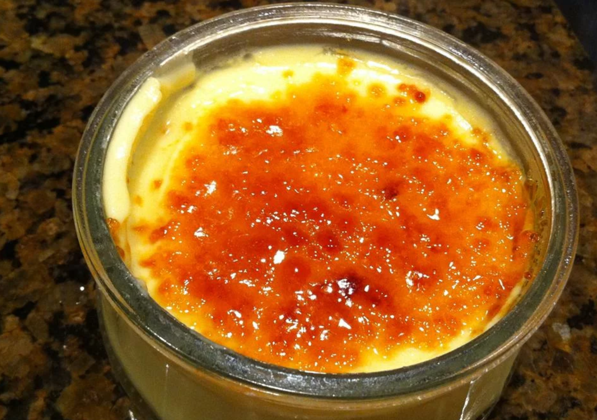

Creme Brulee

Description
This is a great seasonal twist on the restaurant classic. The texture is actually closer to a pudding than a classic creme Brulee, and of course, the star of the dish is the crisp sugar top. This is great for your busy holiday schedule since you can make them the day before and then finish the sugar torching before you serve.
Ingredients
- 3 egg yolks
- 1/2 cup brown sugar
- 1 cup heavy cream
- 1 cup pumpkin puree
- 1/2 teaspoon ground allspice
- 1/4 teaspoon ground cinammon
- 1/4 teaspoon ground nutmeg
- 1 pinch of salt
- 1/2 cup white sugar
Steps
- Preheat oven to 325 degrees F
- Whisk egg yolks and brown sugar together in a large bowl. Stir in heavy cream, pumpkin puree, allspice, cinnamon, nutmeg, and salt.
- Divide pumpkin mixture between seven (5-inch) ramekins about 1/2 inch from the top.
- Place the ramekins in a baking dish and fill with the baking dish hot water to reach halfway up the sides of the ramekins.
- Bake in preheated oven until just set, 30 to 35 minutes. Remove ramekins and refrigerate until completely cool, at least 2 hours.
- Sprinkle about 1 tablespoon of sugar onto each creme brulee. Melt the sugar with a chef's torch until crisp and dark brown, 1 to 2 minutes. Allow to cool before serving.
Nutritional facts
Per Serving:
269 calories; protein 2.3g; carbohydrates 34.2g; fat 14.6g; cholesterol 134.4mg; sodium 127.5mg.
Home